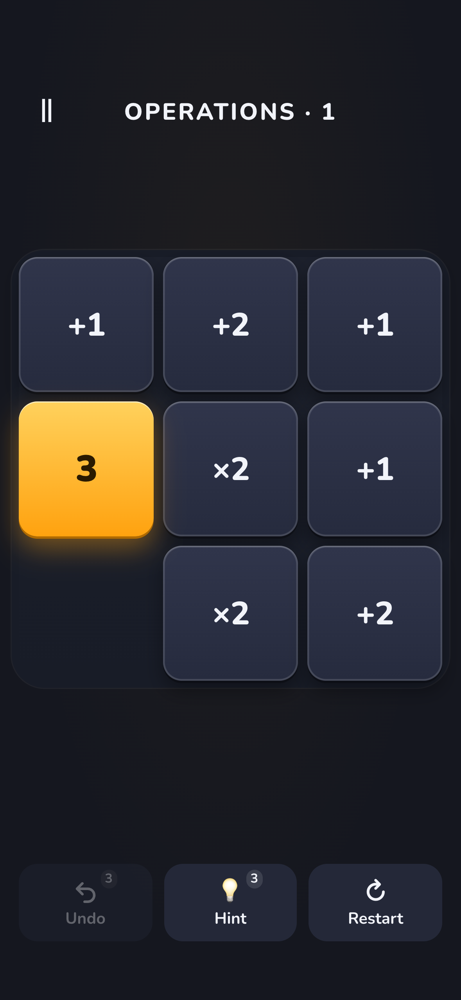
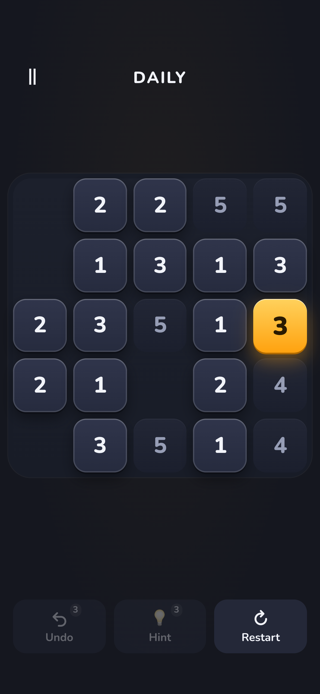
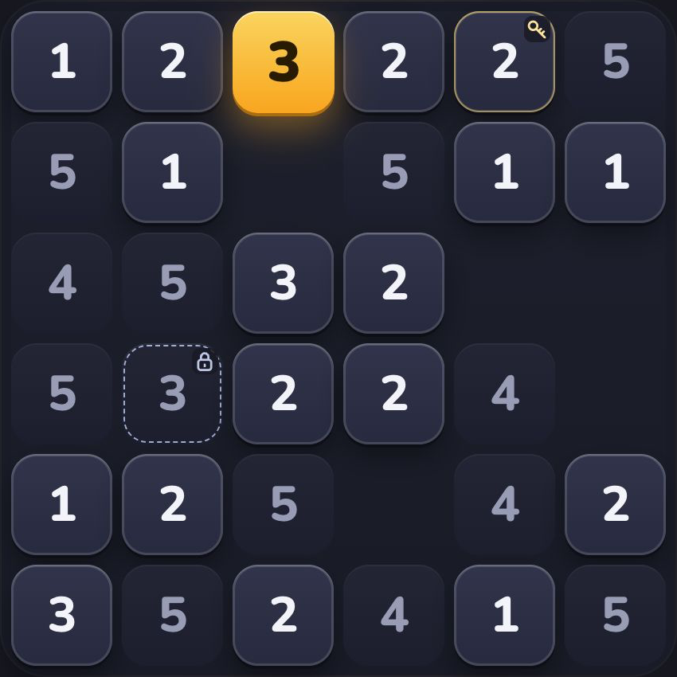
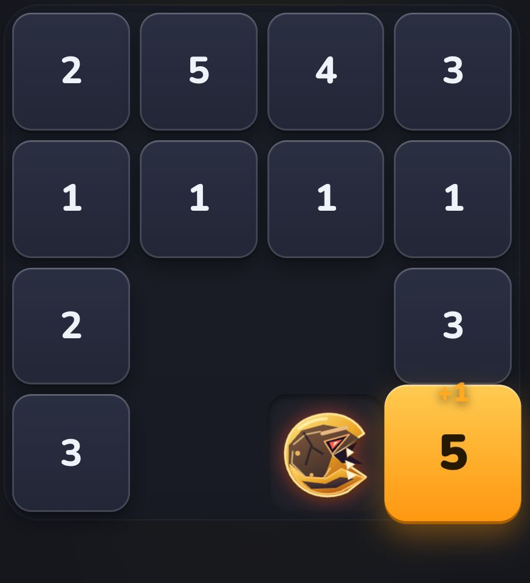
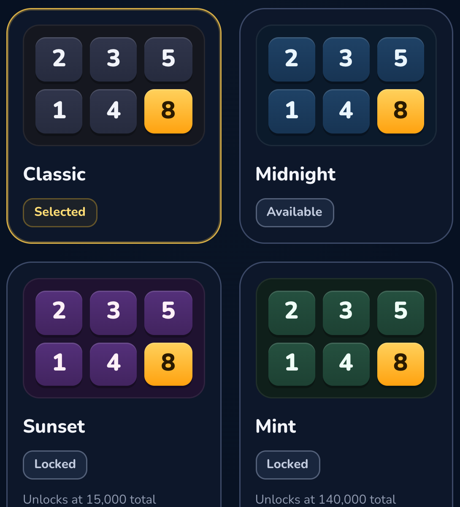

Classic
Grow stronger by collecting numbers. Refine your route as boards grow and new tile rules appear.
Routes and planningYou are the yellow tile. Capture numbers within your power, grow stronger and clear the board. An easy move can close off the route you need next.
iPhone and iPad · Free to download · Ads and in-app purchases · Rated 13+*

Start with one tileBuild your route one move at a time.
Discover new rulesClassic, Operations and Exact.
Think again every dayA fresh route in the Daily Challenge.
Try the idea behind Classic mode with three tiles. The real challenge is keeping a route open as your power grows.
Move up, down, left or right. In Classic mode, the number you capture must be equal to or lower than your power.
With power 3, capture a 2 to reach 5. The tile you leave closes; you cannot travel back through it.
Growing stronger is only part of the puzzle. Plan a route that leaves no number behind.
Gücün 3. Sağındaki 2, gücünden küçük olduğu için alınabilir. Sarı kare sensin.
This small example explains the basic rule. Find the full game on the App Store.
More rules open up as you progress. Each mode asks you to look at your next move differently.
Grow stronger by collecting numbers. Refine your route as boards grow and new tile rules appear.
Routes and planningUse addition, subtraction, multiplication and division in the right order. The same operations can lead to very different results.
Order and calculationEnter an equals-marked tile only when your power matches its number exactly. Arrive with precisely the value you need.
Balance and precisionEveryone plays the same puzzle for the same calendar date. Refine your moves, undos and time to improve your score.
A new puzzle every day
New mechanics make you rethink the rules you know. Plan your power, route and timing together.
Reach the key before the locked tile. Enough power alone will not get you through in the wrong order.
In chase levels, choose your route while keeping the hunter’s movement in mind.
Unlock mastery badges, explore appearances and make the game your own.
Collect the key first, stay one step ahead of the hunter and choose your look. Images are taken from actual game captures.



A short, silent actual gameplay clip · Classic mode · Turkish interface. See how moving the yellow tile collects the numbers.
Video summary: The yellow 4 captures an adjacent 4 to become 8, then moves through the next tiles to clear the board.
Find more about saves, purchases and rankings on the support page.
Visit support ↗You can play levels offline. Updating real-player rankings, accessing the store and showing ads require an internet connection.
Lists can contain real players together with device-generated bot rivals. Bots are labeled in weekly leagues; promotion, demotion and rewards are based on verified standings among real players.
Recheck permanent purchase entitlements using the same Apple Account and Settings → Restore Purchases. Consumable point packs and the one-time point benefit in bundles are not granted again by restoring.
In the published version, progress and your point balance are stored on the device. Uninstalling or clearing app data can erase the local save. A ranking record is not a backup of your game progress or point balance.
Capture your first number. Find your own route.